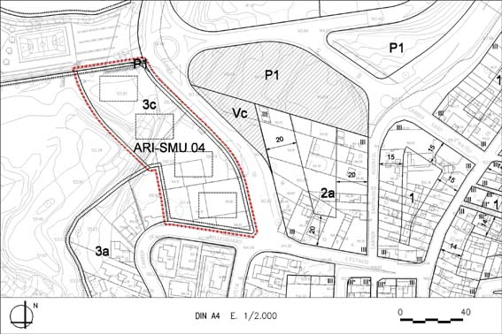

ARI 04 “Carrer estació” (Sector de Millora Urbana ARI-SMU 04)

| Superfície del polígon: Ordenació Sistemes urbanístics de cessió: Espais lliures (P1) Zones edificables: (Galibs indicatius) Residencial aïllada plurihabitatge (clau 3c) |
5.635 m2s 22 m2s 5.613 m2s |
C.E.B.: (St) Sostre total (B+2) (SH) Sostre per habitatges Nombre màxim d’habitatges: Règim HRL : (70% SH) Règim HPC: (10% SH) 462 m²st Règim HPO : (20% SH) 924 m²st Règim HP lloguer : (0% SH) |
0,82 m2st/m2s 4.620 m2st 4.620 m2st 47 hab. 30 hab. 5 hab. 12 hab. 0 hab. |